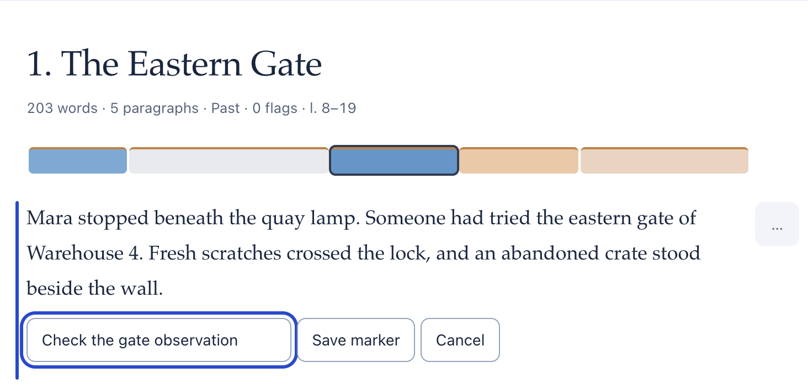

Rivedere senza perdere il filo
Tieni i segni di revisione accanto al testo mentre scrivi con il salvataggio automatico locale. Prima di applicare la bozza, confrontala con il manoscritto salvato usando le stesse impostazioni.
Uno spazio di lavoro locale per chi scrive
Scopri perché un passaggio è stato segnalato, confronta una bozza e tieni personaggi e fonti accanto al testo. Lixity usa il manoscritto in Markdown o testo semplice sul tuo computer.
Manoscritto inventato in inglese. Demo di sola lettura. Nessun account o caricamento.
Registrazione senza audio del progetto fittizio Warehouse 4 nella versione di sviluppo.
Impossibile caricare il video. Apri la demo interattiva. Esplora la demo (in inglese)
Leggi, scrivi e verifica l’effetto di una modifica. L’analisi integrata funziona offline. I servizi facoltativi di voce e mappe e i client di IA connessi hanno requisiti propri per la rete e il trattamento dei dati.
Tieni i segni di revisione accanto al testo mentre scrivi con il salvataggio automatico locale. Prima di applicare la bozza, confrontala con il manoscritto salvato usando le stesse impostazioni.

Apri un’indicazione sul ritmo delle frasi, sulle citazioni o sulle ripetizioni e osserva cosa è stato contato. Confronta i capitoli e torna agli estratti disponibili per decidere cosa rileggere.

Prepara un dossier a partire dal testo e verifica le apparizioni per capitolo e gli estratti nel loro contesto. Tieni note, affermazioni e citazioni esatte accanto al manoscritto.

Nella versione di sviluppo puoi scaricare il dossier visualizzato in PDF A4 con note, tabelle, estratti e citazioni salvati. Per il manoscritto, scegli un formato di stampa o un sito di lettura con limiti di capitolo e protezione dagli spoiler.
Lixity descrive gli schemi del tuo testo senza dare voti né riscrivere una sola riga con l’IA. Esamina i conteggi e i brani nel contesto, poi decidi se una differenza merita attenzione.
Lixity non sostituisce un editor umano e non riscrive le tue frasi. Affianca suite desktop, strumenti open source, correttori cloud e planner di scene dove contano privacy locale, segnali deterministici e provenienza delle fonti.
| Focus | Lixity | Suite desktop (es. Papyrus Autor, Scrivener) | Strumenti OSS (es. novelWriter, Manuskript, bibisco) | Correttori cloud (es. ProWritingAid, AutoCrit) | Planner di scene (es. Fictionary, Plottr) |
|---|---|---|---|---|---|
| Ritmo & stile | Lunghezza delle frasi, dialoghi ed echi di parole per capitolo, collegati ai passaggi | Filtri stilistici (Papyrus Autor) o raccoglitore e compilazione (Scrivener) | Scalette, bacheche e schede personaggio; nessuna analisi statistica della prosa | Suggerimenti a regole e IA, indici di leggibilità, riscritture opzionali | Checklist di scene e archi narrativi, poca analisi frase per frase |
| Personaggi, scene & dossier | Bozze di personaggi e scene dal testo; dossier collegati, raccolte, cronologia e mappe | Database personaggi, mappa mentale e bacheca; gestione manuale | Schede personaggio, tag e bacheca; gestione manuale | Nessun dossier per personaggi o scene | Linee temporali, schede scena e archi; sola pianificazione senza analisi del testo |
| Fonti & cronologia bozze | Archivio locale per testi, PDF, immagini e video. Collega le fonti ai passaggi e confronta le bozze. | Cartelle di ricerca e bacheche, senza collegamenti diretti alle fonti legati alle versioni | Note di progetto, tag e trame, senza archivio fonti né metriche per revisione | Nessun archivio fonti integrato | Note su personaggi e trama senza fonti originali collegate |
| Privacy & offline | Manoscritti e analisi restano locali e offline; servizi online solo su clic | File locali e scrittura offline; controlli periodici della licenza a seconda del produttore | 100 % locale e offline (testo semplice, Markdown o database locale), nessun vincolo cloud | Elaborazione in cloud, account e connessione Internet | Archiviazione locale o cloud a seconda dello strumento (es. Plottr locale, Fictionary online) |
| Modello & prezzo | Gratuito, open source (AGPL-3.0), nessun abbonamento, 7 lingue | Licenze a pagamento. Scrivener prevede una licenza per piattaforma. Gli aggiornamenti principali possono essere a pagamento. | Open source (GPL-3.0), app base gratuita (bibisco offre extra a pagamento) | Abbonamento ricorrente, piani a livelli | Abbonamento ricorrente |
Installa Lixity in locale su Windows, macOS o Linux. Apri qualsiasi bozza in Markdown o testo semplice seguendo la guida iniziale.
Guida di installazione (inglese)uv tool install --python 3.12 --managed-python lixityIl comando installa il pacchetto pubblicato su PyPI. La demo e la documentazione del codice mostrano la versione di sviluppo v0.9.1.
Latest published release · v0.9.1 release notesIl sito e l’app sono disponibili in sette lingue. Scegli esplicitamente la lingua di analisi; l’inglese è l’impostazione predefinita. La documentazione tecnica resta in inglese.
Regole e copertura variano per lingua; tedesco e inglese offrono i controlli più ampi. Cambiare lingua all’interfaccia non modifica mai il manoscritto.
Technical guides, methods and automation contracts are maintained in English.
Raccontaci cosa stavi scrivendo, verificando o condividendo, e dove lo studio ti ha aiutato o frenato. Non serve inviare il manoscritto.
Invia un commento